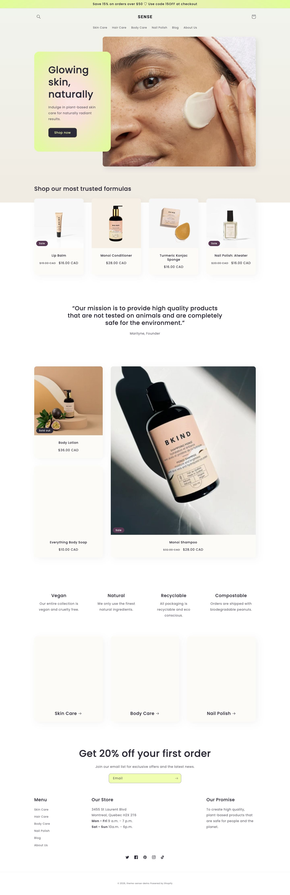
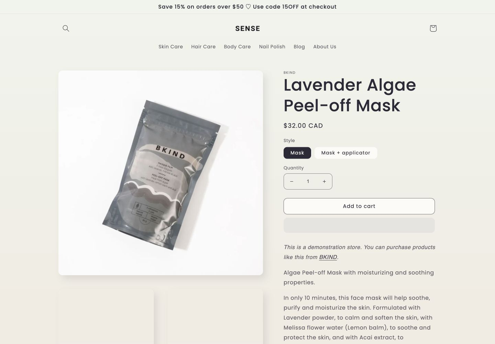
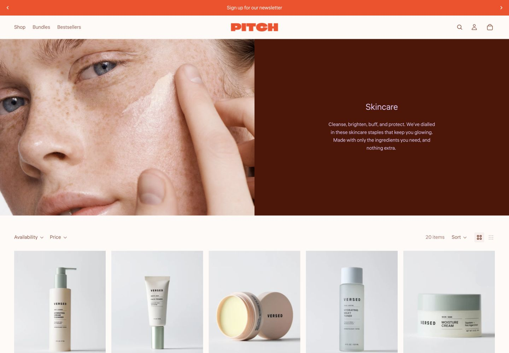
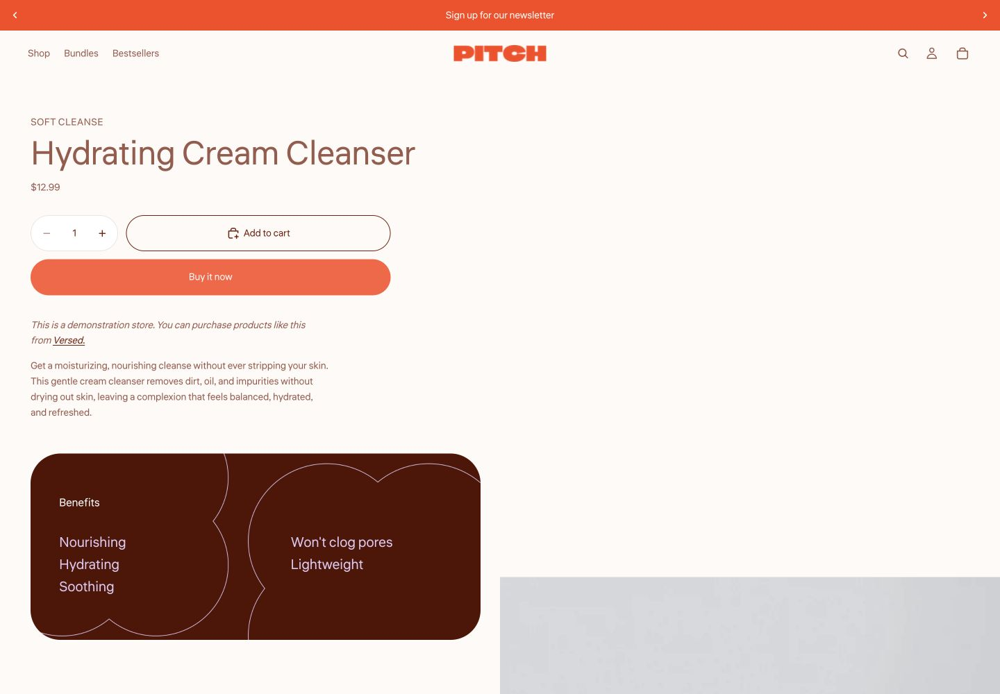
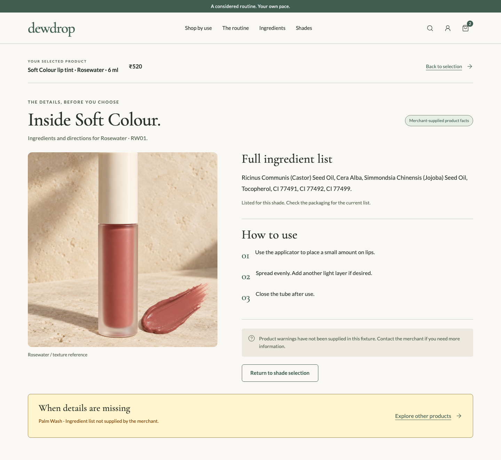

← Dewdrop storybookConventions retained.
A different care-shopping task.
Original design comparison, dated 22 October 2026. Both desktop sources were rendered at 1440 × 1000 CSS px, DPR 1. Previews below show the opening crop; open the full source image for all content. Shopify screenshots are research evidence, never theme assets.
Sense / Dewdrop — 01-home-top

Sense public demo · Home, anonymous, no transaction
Saved capture: 2026-10-22 / 1440 × 1000 / DPR 1 Dewdrop design v1 · 2026-10-23 export · 01-home-top
Dewdrop design v1 · 2026-10-23 export · 01-home-top
1440 × 1000 viewport / full-page PNG / DPR 1- User problem
- Reach a relevant care product without inferring a clinical need.
- Retained convention
- Visible navigation, product imagery and education.
- Original departure and reason
- Dewdrop leads into three explicit routine steps and independently priced SKUs; no treatment quiz or efficacy claims.
- Required contract
- C: typed routine stage + safe public facts. A: product/category navigation.
Saved primary-source rendered screenshot and corresponding JSON in research evidence; current web text refresh for Sense home and Pitch collection/PDP; no fresh remote screenshot taken by Dewdrop. No completed cart/payment, comprehensive filters, accessibility, conversion or performance claim. Screenshots are visual evidence; text refresh is separately scoped.
Sense / Dewdrop — 04-product-selection

Sense public demo · PDP, style choice sampled in saved research
Saved capture: 2026-10-22 / 1440 × 1000 / DPR 1 Dewdrop design v1 · 2026-10-23 export · 04-product-selection
Dewdrop design v1 · 2026-10-23 export · 04-product-selection
1440 × 1000 viewport / full-page PNG / DPR 1- User problem
- Distinguish choices without relying on colour alone.
- Retained convention
- Labelled options beside a product gallery and price.
- Original departure and reason
- Dewdrop shows two same-colour shades as separate named radios with codes and real fixture identities; directions/ingredients remain beside purchase.
- Required contract
- A/B: canonical variants. C: shade facts/hydration. Keyboard equality test in stress-audit.json.
Saved primary-source rendered screenshot and corresponding JSON in research evidence; current web text refresh for Sense home and Pitch collection/PDP; no fresh remote screenshot taken by Dewdrop. No completed cart/payment, comprehensive filters, accessibility, conversion or performance claim. Screenshots are visual evidence; text refresh is separately scoped.
Pitch / Dewdrop — 03-collection

Pitch public demo · Collection, unfiltered, anonymous
Saved capture: 2026-10-22 / 1440 × 1000 / DPR 1 Dewdrop design v1 · 2026-10-23 export · 03-collection
Dewdrop design v1 · 2026-10-23 export · 03-collection
1440 × 1000 viewport / full-page PNG / DPR 1- User problem
- Browse care by use rather than read a generic merchandise grid.
- Retained convention
- Search, facets, sorting, prices and paginated results.
- Original departure and reason
- Numbered routine shelves group independent products. Product type, net quantity and missing facts appear in row context.
- Required contract
- C: real stage/format/shade query filters and result count; suppress unsupported controls before launch.
Saved primary-source rendered screenshot and corresponding JSON in research evidence; current web text refresh for Sense home and Pitch collection/PDP; no fresh remote screenshot taken by Dewdrop. No completed cart/payment, comprehensive filters, accessibility, conversion or performance claim. Screenshots are visual evidence; text refresh is separately scoped.
Pitch / Dewdrop — 05-product-facts

Pitch public demo · PDP, selected cleanser; read-only
Saved capture: 2026-10-22 / 1440 × 1000 / DPR 1
Dewdrop design v1 · 2026-10-23 export · 05-product-facts
1440 × 1000 viewport / full-page PNG / DPR 1- User problem
- Read the product information needed before purchase.
- Retained convention
- Product media and ingredient/use education.
- Original departure and reason
- Dewdrop lists exact supplied ingredients and directions, then explicitly labels missing warnings/ingredients. No borrowed benefit or certification claim.
- Required contract
- C: product-specific ingredient/directions schema. D: claim approval only if later proposed; no health claim is included.
Saved primary-source rendered screenshot and corresponding JSON in research evidence; current web text refresh for Sense home and Pitch collection/PDP; no fresh remote screenshot taken by Dewdrop. No completed cart/payment, comprehensive filters, accessibility, conversion or performance claim. Screenshots are visual evidence; text refresh is separately scoped.